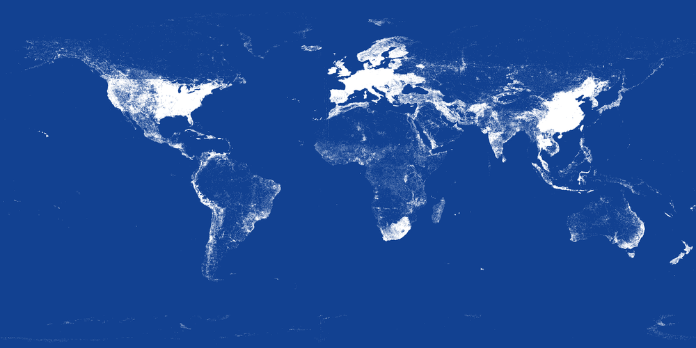

Published: Tue 19 July 2011
By Enda Farrell
In Geo .
tags: Nokia geo work maps
Here’s another view of the Places in the Nokia Places Registry.
Each pixel is the location of one or more points of interest that we have as of the end of June 2011. Under each pixel
there may only be one place or there may be thousands - as is the case in Beijing, Shanghai and São Paolo.

There’s a black & white version
black & white version too.
Please feel free to use this image - but it would be nice if you acknowledge the source :-) And speaking of
acknowledgement, this image comes with a large piece of inspiration from
Erik Fischer (@enf) ’s brilliant “
See something or say something ” Flickr set showing
Tweets and Flickr images - especially how these hi-res images need custom programs to render them.
Proudly powered by Pelican , which takes great advantage of Python .
The theme is by Smashing Magazine , thanks!